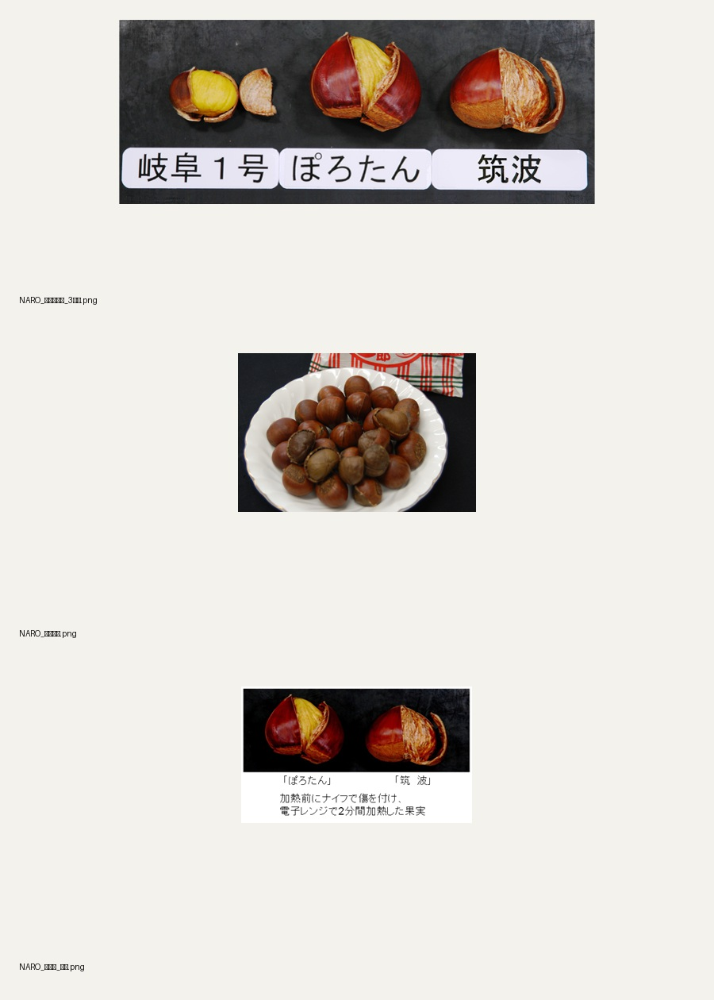

003
밤 시각데이터
← S2
003 밤 시각데이터
/ S3
COOKING STATE CONTROL
Cooked States
삶기·찌기·굽기·전자레인지·당침의 수분, 갈변, 개열, 속껍질과 과육 조직을 분리합니다.
CT001–CT008
· 전자레인지 개열 3개와 190°C HOP 박피 과육 5개.

공식 맥락
· 저해상도이므로 형태와 개열 구조의 보조 참조.
리서치 91점
· NARO 조리 조건, 오카야마현 찜·굽기 비교, CC 외관 자료를 연결했습니다. 미확보 상태의 고해상도 단독 촬영은 제작 게이트입니다.